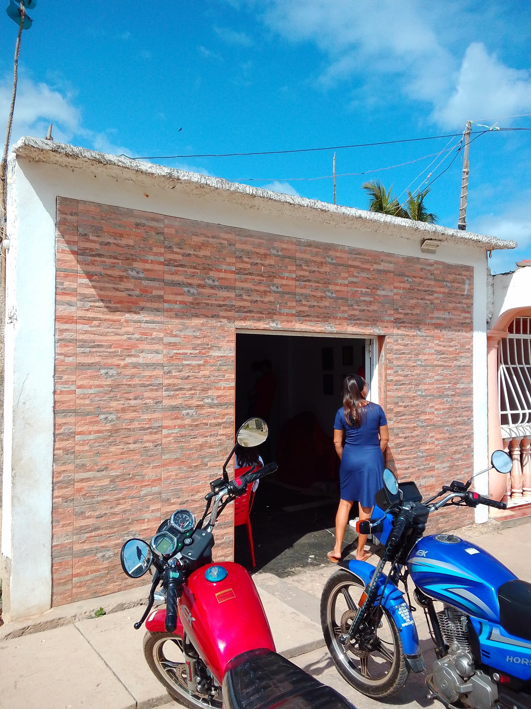
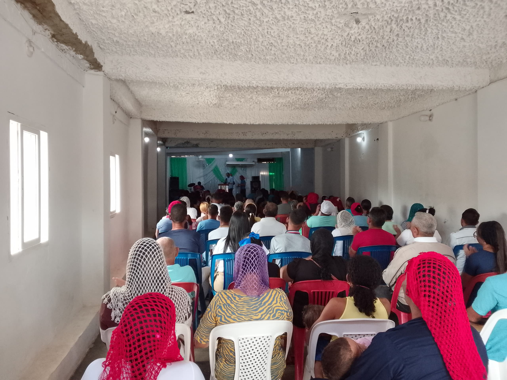
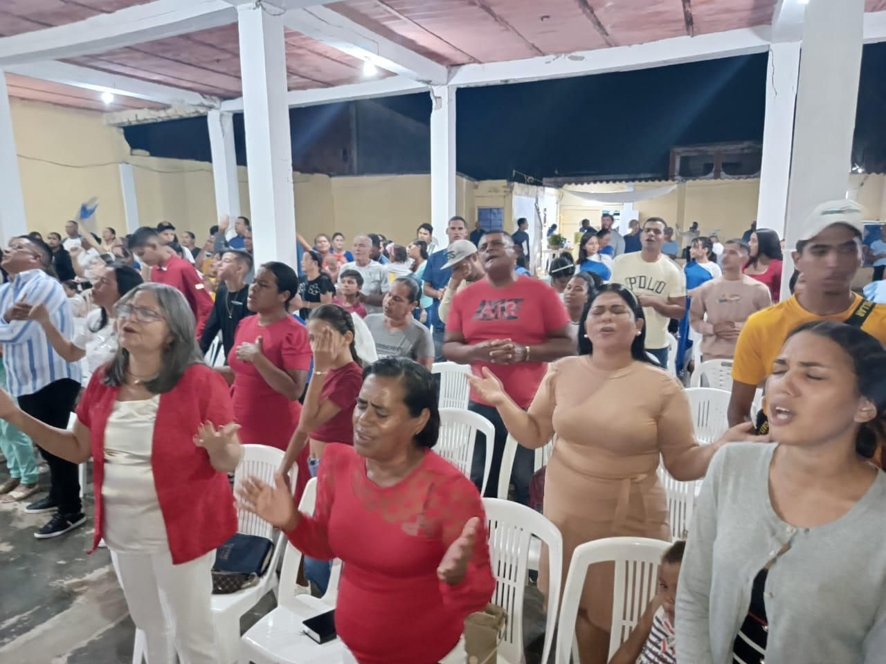
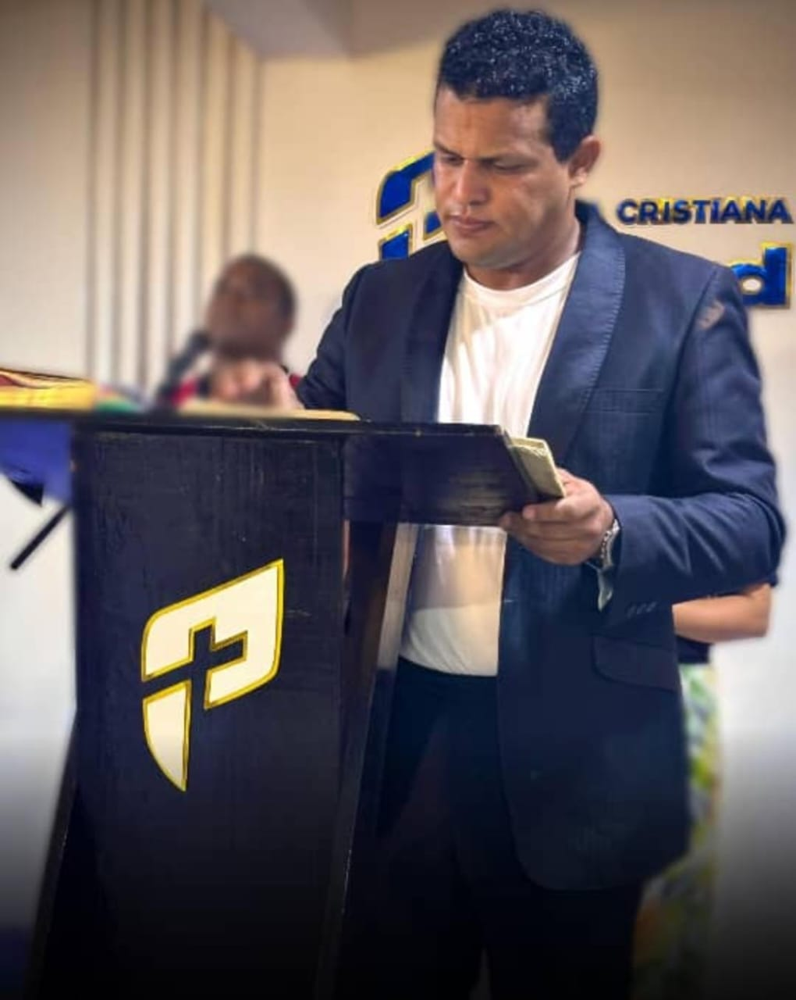
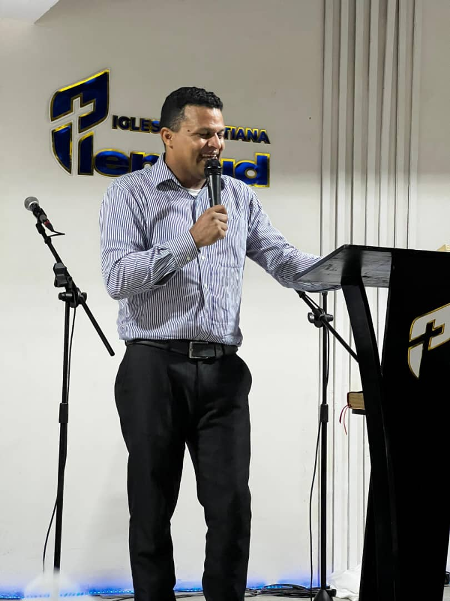

Fue fundada en 22 de Febrero de 1920 por la Ribers Misión, una fundación de maestros cristianos, provenientes de Estados Unidos, quienes llegaron al Morro con la finalidad de constituir una escuela para enseñar a leer y escribir. Es una iglesia Cristocentrica fundamentados en la doctrina bautista. Su principal actividad es la escuela dominical, reúne aproximadamente 350 personas entre niños, jóvenes y adultos el domingo en la mañana, realiza además servicios de oración, acción de gracias, servicios de alabanzas. Tiene un ministerio que se encarga de visitar a los enfermos en casa, hospitales, etc, regalan alimentos a los necesitados, entre otrosSu enfoque son las personas que no conocen a Jesús como Salvador sin distinción alguna
Religiones de El Morro de Puerto Santo
Descubre las tradiciones y celebraciones más importantes de nuestro hermoso pueblo en Sucre, Venezuela
Bienvenido a nuestras tradiciones
San Ramon
Todo comienza mucho antes de que llegue la primera procesión. El ambiente festivo se anuncia con una precisión de cuarenta días de antelación, marcando el inicio formal con el Miércoles de Ceniza, justo cuando los ecos del carnaval aún resuenan en las calles. Es en ese momento cuando el pueblo empieza a prepararse, limpiando sus botes y organizando sus posadas, sabiendo que pronto sus costas se llenarán de vida y visitantes en busca de sol y fe.
Durante estos días, la vida se traslada por completo a la orilla del mar. Los puntos de encuentro se dividen en tres escenarios paradisíacos: la frescura de la zona de Los Cocos, la extensión dorada de Caña Brava y la serenidad de El Olivito. En estos lugares, la arena se convierte en el salón de invitados más grande del pueblo, donde locales y turistas comparten el espacio bajo la sombra de las palmeras, disfrutando de la brisa marina que caracteriza a esta península.
Si prefieres la paz absoluta, los primeros días de la semana son ideales, pues la afluencia es moderada y el sonido de las olas es el protagonista. Sin embargo, a medida que se acerca el viernes y el sábado, el ambiente se transforma radicalmente. El mar se llena de color con botecitos de pesca que pasean a los curiosos y motos de agua que cortan el azul del horizonte, creando una estampa de movimiento y alegría que contagia a todo aquel que pisa la playa.
Horarios de Encuentro: Culto Dominical: 9:30 AM. Servicios Semanales (Miércoles, Jueves y Viernes): 6:30 PM.
Ubicacion: Ubicada estratégicamente detrás del Punto Rojo en Salinas 2, esta casa de oración mantiene sus puertas abiertas al público en general, invitando a todos aquellos que deseen conectar con la palabra de Dios y participar en un ambiente de hermandad y servicio comunitario.
Galería de Semana Santa


Luz del Mundo
Ubicada en la calle Cementerio, frente a la emblemática zona del Tajamar en El Morro de Puerto Santo, la Iglesia Luz del Mundo representa una de las congregaciones con mayor trayectoria en la región. Con 43 años de fundación, este templo forma parte de la sólida estructura de la Obra Evangélica Luz del Mundo, organización nacional e internacional fundada por el Dr. Jaime Banks Puertas, cuyo liderazgo ha llevado el mensaje cristiano a más de 48 naciones
Esta comunidad de fe se distingue por su arraigada identidad pentecostal, fundamentada en la creencia de la Trinidad Divina y el bautismo del Espíritu Santo. Fieles a una sana doctrina, la congregación mantiene una estética conservadora que simboliza su consagración espiritual, reflejando disciplina y respeto en su conducta diaria.
La labor de la Iglesia Luz del Mundo trasciende su infraestructura física, destacándose por: Evangelismo Activo: Realización de campañas públicas enfocadas en el arrepentimiento, la restauración de valores familiares y la difusión de esperanza. Enfoque Comunitario: Un espacio de encuentro que recibe con la calidez típica del sucrense tanto a locales como a visitantes. Estructura Cohesionada: A diferencia de congregaciones independientes, cuenta con el respaldo de una organización global con principios unificados.
Horarios de Encuentro: (Domingos) Mañana: 8:00 a.m. a 12:00 p.m. Tarde/Noche: 6:00 p.m. a 9:00 p.m.
Ubicacion: Ubicada estratégicamente detrás del Punto Rojo en Salinas 2, esta casa de oración mantiene sus puertas abiertas al público en general, invitando a todos aquellos que deseen conectar con la palabra de Dios y participar en un ambiente de hermandad y servicio comunitario.
Galería de Luz del Mundo




Santa Barbara
Apenas el eco de las fiestas de San Ramón comienza a desvanecerse, El Morro de Puerto Santo se viste nuevamente de gala, esta vez con un matiz de ternura y devoción profunda. El 8 de septiembre es una fecha sagrada en todo el oriente venezolano, y aquí, en este rincón bendecido por el mar, la Virgen del Valle es recibida como la madre protectora de cada pescador. Durante todo el día, el aroma a flores frescas inunda el aire mientras los fieles se congregan en misas y rezos solemnes, rindiendo tributo a la "Vallita" en un ambiente de recogimiento que conmueve hasta al viajero más distraído.
Sin embargo, en El Morro la fe y la alegría caminan de la mano. Al caer el sol el mismo 8 de septiembre, la solemnidad cede el paso a la celebración vibrante que caracteriza al pueblo sucrense. Los bares y locales nocturnos se llenan a su máxima capacidad, transformándose en el epicentro de un festejo donde los pobladores brindan en honor a su patrona. Es una noche de música, reencuentros y brindis, donde el turista puede experimentar la calidez genuina del lugareño, que celebra con orgullo la identidad de su tierra bajo el brillo de las estrellas caribeñas.
Horarios de Encuentro: Culto Dominical: 9:30 AM. Servicios Semanales (Miércoles, Jueves y Viernes): 6:30 PM.
Ubicacion: Ubicada estratégicamente detrás del Punto Rojo en Salinas 2, esta casa de oración mantiene sus puertas abiertas al público en general, invitando a todos aquellos que deseen conectar con la palabra de Dios y participar en un ambiente de hermandad y servicio comunitario.
Galería del Paseo de Santa Barbara


Salvados x Jesus
Bajo la firme convicción de que "lo que Dios promete, lo cumple", el Ministerio Apostólico y Profético a las naciones "Salvados X Jesús" ha consolidado una trayectoria de fe y servicio en El Morro de Puerto Santo. Fundada el 11 de noviembre de 2012 por los pastores Luis Amaurys Lugo y Zobeida de Lugo, esta congregación inició su camino en Puerto Santo y hoy se establece con sede propia en la calle El Cementerio, sector Los Cocos, en el local que anteriormente ocupaba el conocido "Fran Ross".
La visión de la iglesia es extender el Reino de los Cielos en la tierra, con la misión fundamental de inspirar a las multitudes a acercarse a Cristo. Actualmente, la comunidad cuenta con aproximadamente 70 personas bautizadas y una asistencia constante de entre 30 y 40 niños, reflejando un crecimiento sostenido basado en el trabajo en equipo de adultos, ancianos y jóvenes.
El ministerio se destaca por su compromiso social y comunitario, realizando actividades que incluyen. Labores Sociales: Entrega de bolsas de alimentos a familias necesitadas y jornadas de limpieza en las calles del sector. Evangelización Activa: Un esfuerzo conjunto para llevar "las buenas nuevas" a cada rincón del pueblo. Atención Especializada: Posee ministerios dedicados exclusivamente a la atención de damas, caballeros, jóvenes y niños.
Horarios de Encuentro: Culto Dominical: 9:30 AM. Servicios Semanales (Miércoles, Jueves y Viernes): 6:30 PM.
Ubicacion: Ubicada estratégicamente detrás del Punto Rojo en Salinas 2, esta casa de oración mantiene sus puertas abiertas al público en general, invitando a todos aquellos que deseen conectar con la palabra de Dios y participar en un ambiente de hermandad y servicio comunitario.
Galería de Salvados x Jesus



Plenitud
Con una trayectoria de 12 años de servicio ininterrumpido en la comunidad, la Iglesia Plenitud se ha consolidado como un espacio de restauración y esperanza en El Morro de Puerto Santo. Ubicada en la calle El Cementerio, sector Los Cocos, esta congregación trabaja con la firme misión de dar a conocer el amor de Dios a cada familia, convencidos de que una sociedad transformada comienza con el fortalecimiento espiritual del hogar.
Actualmente, la iglesia cuenta con una comunidad activa de aproximadamente 60 miembros, entre los cuales se integran personas bautizadas, creyentes y visitantes que se suman semana a semana. Su labor no solo se enfoca en la enseñanza doctrinal, sino en crear un ambiente de pertenencia donde cada asistente pueda experimentar un crecimiento personal y espiritual.
La Iglesia Plenitud mantiene sus puertas abiertas para recibir a todo aquel que busque un nuevo comienzo, ofreciendo un mensaje fresco y relevante que busca generar un impacto positivo en el corazón de los habitantes de el pueblo.
Horarios de Encuentro: Jueves (7:00 p.m.): Discipulado (Espacio dedicado a la enseñanza profunda y formación de líderes). Domingos (7:00 p.m.): Servicio Dominical (Encuentro de adoración y palabra para toda la familia).
Ubicacion: Ubicada en calle El Cementerio, Sector Los Cocos
Galería de Plenitud




M.A.P. Nueva Generación
El Ministerio Apostólico y Profético (M.A.P.) Nueva Generación es una comunidad cristiana establecida en el sector Salinas 2 de El Morro, Estado Sucre, con una trayectoria que inició el 19 de junio de 2012. Bajo una doctrina de fe pentecostal, esta institución se dedica a la búsqueda espiritual de Dios y al fortalecimiento de los principios cristianos, utilizando la Biblia como su manual fundamental de conducta y amor al prójimo. Con una congregación de aproximadamente 40 miembros, el ministerio se ha convertido en un referente de esperanza y formación espiritual para la comunidad local.
La labor de M.A.P. Nueva Generación trasciende las paredes del templo a través de diversos programas y servicios:Formación y Adoración: Organizan espacios como la Escuela Sobrenatural, las Casas de Oración y de Paz, además de las celebraciones denominadas Fiesta con el Rey Jesús. Acción Social: A través del programa Cachorro de León, realizan una valiosa labor social dirigida a la atención de niños, ancianos y personas con discapacidad.
Horarios de Encuentro: Culto Dominical: 9:30 AM. Servicios Semanales (Miércoles, Jueves y Viernes): 6:30 PM.
Ubicacion: Ubicada estratégicamente detrás del Punto Rojo en Salinas 2, esta casa de oración mantiene sus puertas abiertas al público en general, invitando a todos aquellos que deseen conectar con la palabra de Dios y participar en un ambiente de hermandad y servicio comunitario.
Galería de M.A.P. Nueva Generación